For the following multiple choice questions, assume the acceleration due to gravity m/s. Each question is worth one mark.
- A pigeon of mass 0.5 kg is happily seated atop the shell of a turtle of mass 5 kg. What is the weight of the pigeon?
- a. 0.5 kg
- b. 5 N
- c. 55 N
- d. 0 kg
- e. 5.5 kg
Topic: Newtonian Mechanics Metodi: Free-Body Diagram, Physical Modeling Competenze: Physical Reasoning Objects: - Fonte: Testo (PDF) - p.4
Per le seguenti domande a scelta multipla, supponiamo l’accelerazione dovuta alla gravità m/s. Ogni domanda vale un punto.
- Un piccione di 0,5 kg siede felicemente sullo strato di una tartaruga di 5 kg. Qual è il peso del piccione?
- a. 0.5 kg
- b. 5 N
- c. 55 N
- d. 0 kg
- e. 5.5 kg
Topic: Newtonian Mechanics Metodi: Free-Body Diagram, Physical Modeling Competenze: Physical Reasoning Objects: - Fonte: Testo (PDF) - p.4
- What is the force of the pigeon on the turtle?
- a. 0.5 kg
- b. 5 N
- c. 55 N
- d. 0 N
- e. 5.5 kg
Topic: Newtonian Mechanics Metodi: Free-Body Diagram Competenze: Physical Reasoning Objects: - Fonte: Testo (PDF) - p.4
- Qual è la forza del piccione sulla tartaruga?
- a. 0.5 kg
- b. 5 N
- c. 55 N
- d. 0 N
- e. 5.5 kg
Topic: Newtonian Mechanics Metodi: Free-Body Diagram Competenze: Physical Reasoning Objects: - Fonte: Testo (PDF) - p.4
- What is the force of the turtle on the pigeon?
- a. 0 N
- b. 50 N
- c. 55 N
- d. 5 N
- e. 0.5 kg
Topic: Newtonian Mechanics Metodi: Free-Body Diagram Competenze: Physical Reasoning Objects: - Fonte: Testo (PDF) - p.4
- Qual è la forza della tartaruga sul piccione?
- a. 0 N
- b. 50 N
- c. 55 N
- d. 5 N
- e. 0.5 kg
Topic: Newtonian Mechanics Metodi: Free-Body Diagram Competenze: Physical Reasoning Objects: - Fonte: Testo (PDF) - p.4
- Which of the following force diagrams best describes the forces on the pigeon when the turtle starts to walk to the left, as shown.
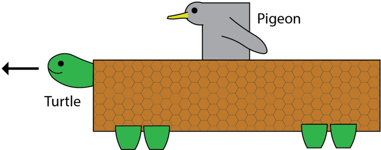
Assume the turtle moves only in the horizontal direction, and that its shell can be considered as a horizontal flat surface.
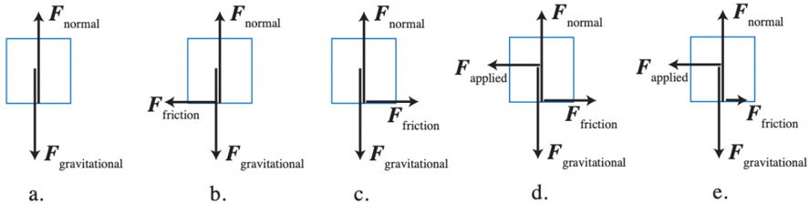
Topic: Newtonian Mechanics Metodi: Free-Body Diagram Competenze: Diagrammatic Reasoning, Physical Reasoning Objects: - Fonte: Testo (PDF) - p.5
- Quale dei seguenti diagrammi di forza descrive meglio le forze che il colombe esercita quando inizia a camminare a sinistra, come mostrato.
Supponiamo che la tartaruga si muova solo in direzione orizzontale e che la sua conchiglia possa essere considerata come una superficie piatta orizzontale.
Topic: Newtonian Mechanics Metodi: Free-Body Diagram Competenze: Diagrammatic Reasoning, Physical Reasoning Objects: - Fonte: Testo (PDF) - p.5
- The pigeon sees its friend, an eagle, in the sky, and flies to meet the eagle who is gliding in the opposite direction. The eagle has a mass of 2 kg. If the pigeon and eagle have the same kinetic energy, which of the following statements are correct.
- a. The pigeon is moving at a speed two times that of the eagle.
- b. The pigeon is moving at a speed four times that of the eagle.
- c. The pigeon is moving at a speed half that of the eagle.
- d. The pigeon is moving at a speed one quarter that of the eagle.
- e. The pigeon and eagle are moving at the same speed.
Topic: Conservation of Energy Metodi: Conservation of Energy Competenze: Physical Reasoning, Mathematical Modeling Objects: - Fonte: Testo (PDF) - p.6
- Il piccione vede il suo amico, un’aquila, nel cielo e vola ad incontrare l’aquila che si schianta nella direzione opposta. L’aquila ha una massa di 2 kg. Se il piccione e l’aquila hanno la stessa energia cinetica, quale delle seguenti affermazioni è corretta.
- a. Il piccione si muove a due volte la velocità dell’aquila.
- b. Il piccione si muove a quattro volte la velocità dell’aquila.
- c. Il piccione si muove a una velocità metà della velocità dell’aquila.
- d. Il piccione si muove a una velocità di un quarto di quella dell’aquila.
- e. Il piccione e l’aquila si muovono alla stessa velocità.
Topic: Conservation of Energy Metodi: Conservation of Energy Competenze: Physical Reasoning, Mathematical Modeling Objects: - Fonte: Testo (PDF) - p.6
- Unfortunately, in their excitement to see each other, the pigeon and eagle collide mid-air while flying horizontally, directly at each other. Their wings get tangled up and so they are unable to fly. In the instant after their collision, which direction do the tangled-up birds go?
- a. In the direction the pigeon was flying
- b. In the direction the eagle was flying
- c. The birds stop dead in the air
- d. The birds fall straight downwards
- e. More information is needed to answer this question
Topic: Conservation of Momentum Metodi: Conservation of Momentum Competenze: Physical Reasoning Objects: - Fonte: Testo (PDF) - p.6
- Purtroppo, nell’entusiasmo per vedersi, il piccione e l’aquila si scontrano in mezzo all’aria mentre volano orizzontalmente, direttamente l’uno contro l’altro. Le loro ali si intrecciano e non sono in grado di volare. In quel momento dopo la collisione, in che direzione gli uccelli in intreccio vanno?
- a. In direzione dove il piccione volava
- b. In direzione in cui l’ aquila stava volando
- c. Gli uccelli si fermano morti in aria
- d. Gli uccelli cadono dritto verso il basso
- e. Per rispondere a questa domanda occorrono ulteriori informazioni.
Topic: Conservation of Momentum Metodi: Conservation of Momentum Competenze: Physical Reasoning Objects: - Fonte: Testo (PDF) - p.6
- Which of the following graphs best describes the total mechanical energy of both the birds as a function of time for the birds before and after collision.
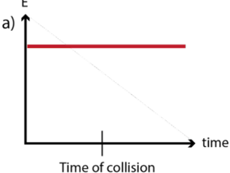
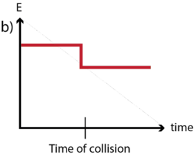
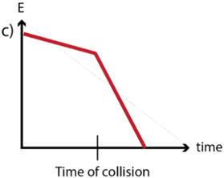
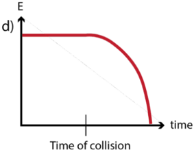
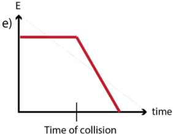
- A. a
- B. b
- C. c
- D. d
- E. e
Topic: Conservation of Energy Metodi: Conservation of Energy Competenze: Diagrammatic Reasoning, Physical Reasoning Objects: - Fonte: Testo (PDF) - p.6
- Quale dei grafici seguenti descrive meglio l’energia meccanica totale di entrambi gli uccelli come funzione del tempo per gli uccelli prima e dopo la collisione.
- A. a
- B. b
- C. c
- D. d
- E. e
Topic: Conservation of Energy Metodi: Conservation of Energy Competenze: Diagrammatic Reasoning, Physical Reasoning Objects: - Fonte: Testo (PDF) - p.6
- Alice wishes to measure the acceleration due to gravity for a falling object. However, unfortunately the only object she has on hand to drop is a tissue box. She wants to minimise the effect of air resistance, which creates a force in the opposite direction to an object’s motion and therefore slows down the falling object. She films the object so error due to reaction time is negligible. Which of the following experimental set-ups is optimal?
- a) Drop an empty tissue box from a low height, around 1 metre, and time how long it takes to fall.
- b) Drop an empty tissue box from a higher height, around 10 metres, and time how long it takes to fall.
- c) Drop a full tissue box from a low height, around 1 metre, and time how long it takes to fall.
- d) Drop a full tissue box from a higher height, around 10 metres, and time how long it takes to fall.
- e) All the above methods will give the same result
Topic: Newtonian Mechanics Metodi: Experimental Data Analysis, Physical Modeling Competenze: Experimental Data Analysis, Physical Reasoning Objects: - Fonte: Testo (PDF) - p.7
- Alice vuole misurare l’accelerazione dovuta alla gravità di un oggetto cadente. Purtroppo l’unico oggetto che ha a disposizione è una scatola di tessuti. Lei vuole ridurre al minimo l’effetto della resistenza dell’aria, che crea una forza nella direzione opposta al movimento di un oggetto e quindi rallenta l’oggetto che cade. Filma l’oggetto in modo che l’errore dovuto al tempo di reazione sia trascurabile. Quale delle seguenti configurazioni sperimentali è ottimale?
- a) Lanciare una scatola vuota da un’altezza bassa, di circa 1 metro, e tempo per il tempo necessario per cadere.
- b) Lanciare una scatola di tessuti vuota da un’altezza più alta, di circa 10 metri, e tempo per cadere.
- c) Lanciare una scatola piena di tessuti da un’altezza bassa, di circa 1 metro, e tempo per il tempo necessario per cadere.
- d) Lanciare una scatola piena di tessuti da un’altezza più alta, di circa 10 metri, e tempo per cadere.
- e) Tutti i metodi di cui sopra danno lo stesso risultato
Topic: Newtonian Mechanics Metodi: Experimental Data Analysis, Physical Modeling Competenze: Experimental Data Analysis, Physical Reasoning Objects: - Fonte: Testo (PDF) - p.7
- Newton’s Law of Gravitation, the force due to gravity of an object with mass on a different object of mass , is given as:
Where is the gravitational constant, m kg s, and is the distance between the two objects.
Assuming , and are constant, what combination of variables will give a straight-line relationship?
- a. vs
- b. vs
- c. vs
- d. vs
- e. None of the above
Topic: Gravitation Metodi: Newton’s Law of Gravitation, Graph Linearization Competenze: Graph Linearization, Mathematical Modeling Objects: - Fonte: Testo (PDF) - p.7
- La legge di gravitazione di Newton, la forza dovuta alla gravità di un oggetto con massa su un oggetto di massa differente, è data come:
Se è la costante gravitazionale, m kg s e è la distanza tra i due oggetti.
Supponendo che , e siano costanti, quale combinazione di variabili darà una relazione a linea retta?
- a. vs
- b. vs
- c. vs
- d. vs
- e. Nessuna delle seguenti
Topic: Gravitation Metodi: Newton’s Law of Gravitation, Graph Linearization Competenze: Graph Linearization, Mathematical Modeling Objects: - Fonte: Testo (PDF) - p.7
- The moon can be visible in the sky at night even though it does not produce any light itself. Instead, the sun produces light, and the moon reflects this light. We use light diagrams to show the path of light rays as arrows, from when they are produced as a source (tail of arrow) to when they are observed (head of arrow). Which of the following light diagrams describe how an observer at the equator of the Earth can see the moon at night? Assume the Earth has no tilt, and the Earth and moon rotate in a flat plane around the sun. Note the figure is not to scale.
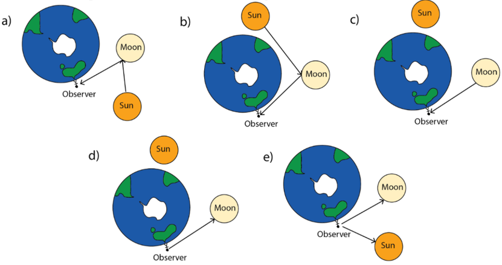
Topic: Geometric Optics Metodi: Ray Tracing Competenze: Diagrammatic Reasoning, Physical Reasoning Objects: Planet, Star Fonte: Testo (PDF) - p.8
- La luna può essere visibile nel cielo di notte anche se non produce alcuna luce da sola. Invece il sole produce luce e la luna riflette questa luce. Utilizziamo diagrammi di luce per mostrare il percorso dei raggi luminosi come frecce, dal momento in cui vengono prodotti come fonte (cola di freccia) al momento in cui vengono osservati (capella di freccia). Quale dei seguenti diagrammi di luce descrive come un osservatore all’equatore della Terra possa vedere la luna di notte? Supponiamo che la Terra non abbia un’inclinazione, e che la Terra e la Luna ruotino in un piano piatto intorno al Sole. Si noti che la cifra non è a scala.
Topic: Geometric Optics Metodi: Ray Tracing Competenze: Diagrammatic Reasoning, Physical Reasoning Objects: Planet, Star Fonte: Testo (PDF) - p.8
Section B: Skateboarding (Suggested time: 35 minutes)
A skateboarder is testing out a new feature at their local skate park. It consists of two smooth ramps and a smooth flat surface between them as shown in the diagram below. The skater begins at the top of one ramp and lets the skateboard freely roll through the course. That is, they do not push off the ground or provide any ‘boost’ to the skateboard at any point.
Assume throughout that the skater can smoothly transition from the ramp to the flat surface (without loss of energy). Take the acceleration due to gravity as 9.81 m/s.
For all plotting questions, no calculations are required, only the general shape of the graph is expected.
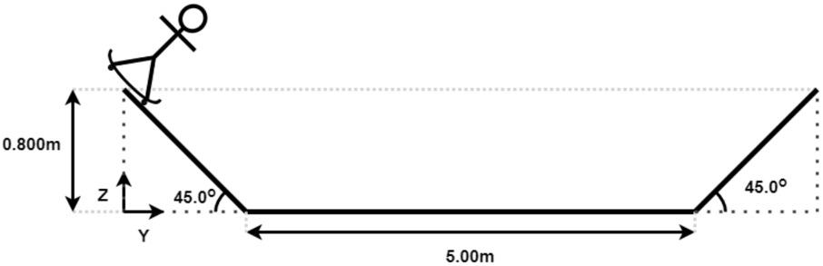
a) Draw a free-body-diagram of the skater on the ramp,
- i) while going up the ramp; (1 mark)
- ii) and going down the ramp. (1 mark)
b) Sketch a plot of speed as a function of time of the skater for three laps. One lap involves the skater going down one ramp, across the flat and up the opposite ramp. (1 mark)
c) Now, on a single set of axes, sketch three different plots:
- i. the skater’s kinetic energy
- ii. gravitational potential energy
- iii. total mechanical energy
each as a function of time for three laps. (2 marks)
Part 2
Upon feedback from the skater, the council adds a rough material with some, but low friction to the flat surface. The ramps remain smooth and no dimensions are changed.
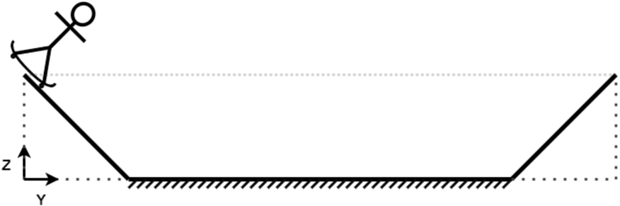
a) Draw a free body diagram of the skater on the new flat surface. (1 mark)
b) Sketch a plot of speed as a function of time of the skater for three laps, using the same definition of a lap as part one. Assume for this part that the skater does not stop during these laps. (2 marks)
c) Sketch a plot of only total mechanical energy as a function of time over three laps. (2 marks)
The friction coefficient, , of the rough material is 0.0150. Assume the skater and skateboard weigh 70.0 kg.
d) How many full laps does the skater complete before they come to a stop? (3 marks)
e) What is the horizontal distance (in the direction) of the skater from the top of the left ramp (origin indicated on the diagram) when they come to a stop? (2 marks)
Part 3
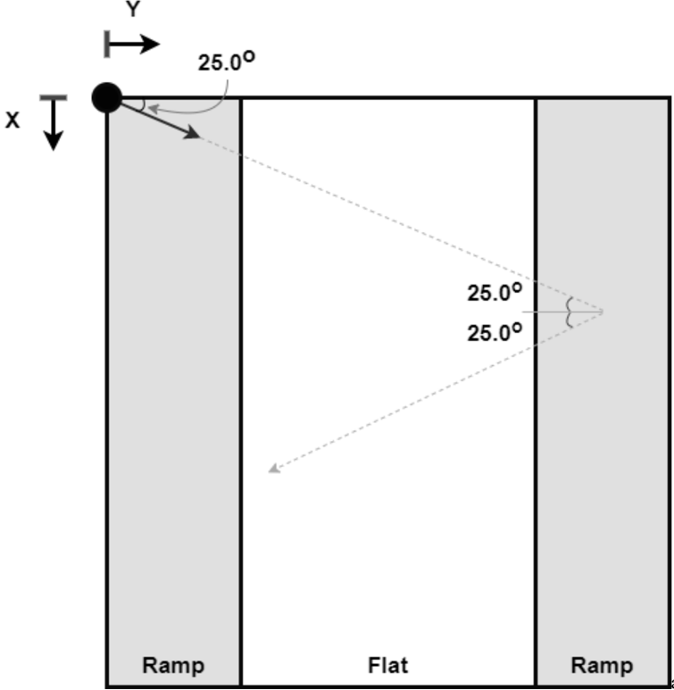
The skater now initially travels down the ramp at an angle, shown in the diagram above from a birds-eye view. Assume that at the end of each lap, the skater turns around and leaves the ramp at the same angle they arrive at, reflected over the -axis. The ramp has the same dimensions as in the first two parts. The rough material remains on the flat surface and the ramps remain smooth.
a) How many full laps does the skater complete before they come to a stop? (4 marks)
b) How far do they travel in the -direction before they stop? (4 marks)
Topic: Conservation of Energy, Newtonian Mechanics Metodi: Conservation of Energy, Free-Body Diagram, Kinematic Equations Competenze: Diagrammatic Reasoning, Mathematical Modeling, Physical Reasoning Objects: Inclined Plane Fonte: Testo (PDF) - p.9
Sezione B: Skateboarding (Tempo suggerito: 35 minuti)
Un skateboarder sta testando una nuova funzionalità nel loro parco di skate locale. Esso è costituito da due rampe lisce e da una superficie piatta liscia tra di esse, come mostrato nel diagramma di seguito. Il pattinatore inizia in cima ad una rampa e lascia che lo skateboard ruoli liberamente attraverso il percorso. Cioè, non spingono il terreno o forniscono alcun “impulso” allo skateboard in nessun momento.
Supponiamo che il pattinatore possa passare senza problemi dalla rampa alla superficie piatta (senza perdita di energia). Prendete l’accelerazione dovuta alla gravità come 9,81 m/s.
Per tutte le domande di grafica non sono necessari calcoli, si prevede solo la forma generale del grafico.
a) disegnare un diagramma del corpo libero del pattinatore sulla rampa,
- i) mentre si sale la rampa; (1 punto)
- ii) e scendere la rampa. 1 punto
b) Segnare un diagramma della velocità in funzione del tempo dello sciatto per tre giri. Un giro implica che il pattinatore scenda una rampa, attraversa il piano e sale la rampa opposta. 1 punto
c) Ora, su un singolo insieme di assi, disegnare tre tratti diversi:
- i. energia cinetica del pattinatore
- ii. energia potenziale gravitazionale
- III. energia meccanica totale
ciascuno come funzione del tempo per tre giri. 2 punti)
Parte 2
Dopo il feedback del pattinatore, il consiglio aggiunge un materiale grosso con alcune, ma basso attrito alla superficie piatta. Le rampe restano lisce e non si modificano le dimensioni.
a) Disegnare un diagramma della carrozzeria libera del pattinatore sulla nuova superficie piatta. 1 punto
b) Segnare un diagramma della velocità in funzione del tempo dello skate per tre giri, utilizzando la stessa definizione di giro della parte 1. Supponiamo che per questa parte il pattinatore non si ferma durante questi giri. 2 punti)
c) Segnare un diagramma di energia meccanica totale soltanto in funzione del tempo in tre giri. 2 punti)
Il coefficiente di attrito, , del materiale grezzo è di 0,0150. Supponiamo che il pattinatore e lo skateboard pesino 70,0 kg.
d) Quanti giri completi il pattinatore completa prima di arrivare a un’ostazione? (3 punti)
e) Qual è la distanza orizzontale (in direzione ) del pattinatore dalla parte superiore della rampa sinistra (originario indicato sul diagramma) quando si ferma? 2 punti)
Parte 3
Il pattinatore inizia ora a scendere in una rampa in un angolo, come mostrato nel diagramma sopra da un punto di vista da occhi d’uccello. Supponiamo che alla fine di ogni giro, il pattinatore si gira e lascia la rampa all’angolo in cui arriva, riflettuto sull’asse . La rampa ha le stesse dimensioni delle prime due parti. Il materiale grezzo rimane sulla superficie piatta e le rampe rimangono lisce.
a) Quanti giri completano il pattinatore prima di fermarsi? (4 punti)
b) Quanto lontano si viaggia nella direzione prima di fermarsi? (4 punti)
Topic: Conservation of Energy, Newtonian Mechanics Metodi: Conservation of Energy, Free-Body Diagram, Kinematic Equations Competenze: Diagrammatic Reasoning, Mathematical Modeling, Physical Reasoning Objects: Inclined Plane Fonte: Testo (PDF) - p.9
Section C: Satellite (Suggested time: 32 minutes)
Heat flows primarily through convection, conduction, and radiation. Convection is the most dominant driver of heat flows on earth. In space however there is infamously no air, this causes a challenge for spacecraft design, as without careful consideration of conduction and radiation, the spacecraft may easily overheat or become too cold. Here we will investigate conductive heat flows such as when a heat sink is needed to be thermally coupled to a heat source in a spacecraft.
Consider a rectangular plate of metal of length , width , and thickness . The heat which flows across the length of the plate via conduction is proportional to its width, thickness, and temperature difference across the length of the plate , and is inversely proportional to the length of the plate.
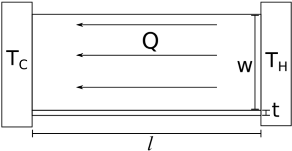
The expression for the amount of heat flow across the plate is:
This constant of proportionality, , known as the thermal conductivity, is material dependent. Heat can transfer more easily via conduction through materials with a high thermal conductivity.
Consider a plate of width , thickness , length , thermal conductivity , and with a temperature difference at its left side and at its right side.
- Using the values W/(m.K), cm, mm, cm, K, K, calculate the heat which flows through the plate. (1 mark)
Now we will explore the temperature of the plate at different points along its length. At either end the plate is connected to two heat reservoirs at and ; these are assumed to be so large that their temperature is constant.
Consider dividing this plate across its width into two plates of length and , with .
We will be considering steady state where the temperature of the plate does not change and so the heat which flows through both plates is the same. We can use this construction to find the temperature at any point along the plate by choosing different values of .
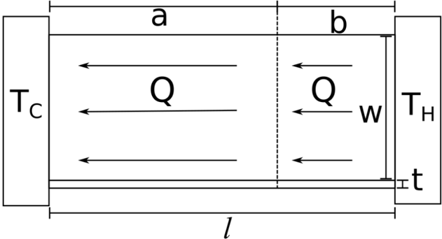
-
What is the temperature two-thirds along the length of the plate from the left side? (1 mark)
-
Draw a graph of the temperature of the rod as a function of distance from the left side. (3 marks)
Now imagine a copper plate joined along its width to an aluminium plate as shown in the diagram. The thermal conductivity of copper is about 2.5 times that of aluminium, both the copper and the aluminium plates have the same length .
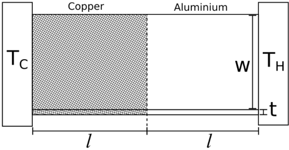
- Is the temperature drop greater across the aluminium or copper plate? Justify your answer. (2 marks)
Imagine that the plates were not joined end to end but rather stacked on top of each other as shown in the diagram below.
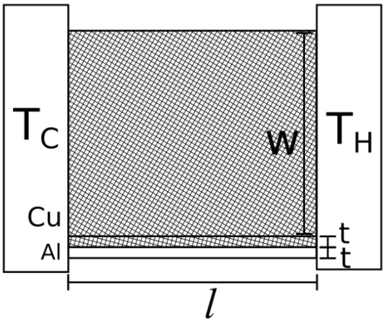
- Calculate the maximum heat per second able to be conducted by the system if the temperature difference is to remain less than 3 K. (2 marks)
When trying to move heat from one part of a spacecraft to another, it is beneficial to design a conductive system which can transport a large amount of heat with a small temperature drop, while being as light as possible.
Alice and Bob are two engineers who have each designed a composite part which they believe to be better performing. They both have a base aluminium plate, however Alice has covered the top half of the plate with copper whereas Bob has covered the right half.
Alice claims that it is better to have the back half covered with copper as it provides a high conductivity path all the way from the hot end to the cold end. Bob claims that his design is better as he gives the entire hot end a high conductivity path for as long as possible.
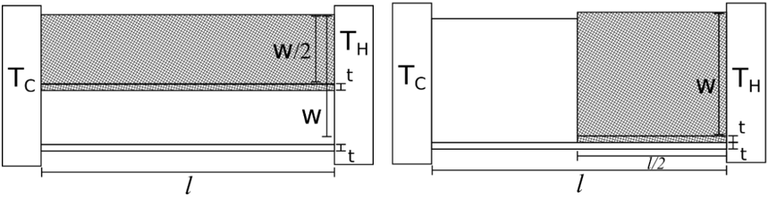
- Whose reasoning is correct? Use equations to justify your answer. (2 marks)
A component of Alice and Bob’s design is a hot spot and they need to cool it down. After some reading they find that a tree-like structure will work best to distribute the heat from the hot spot. They find however that they still need to squeeze out a bit more performance. As a modification to improve heat distribution Alice thinks that they should add extra aluminium connecting the branches together, however Bob thinks that it would be better to add in new branches.
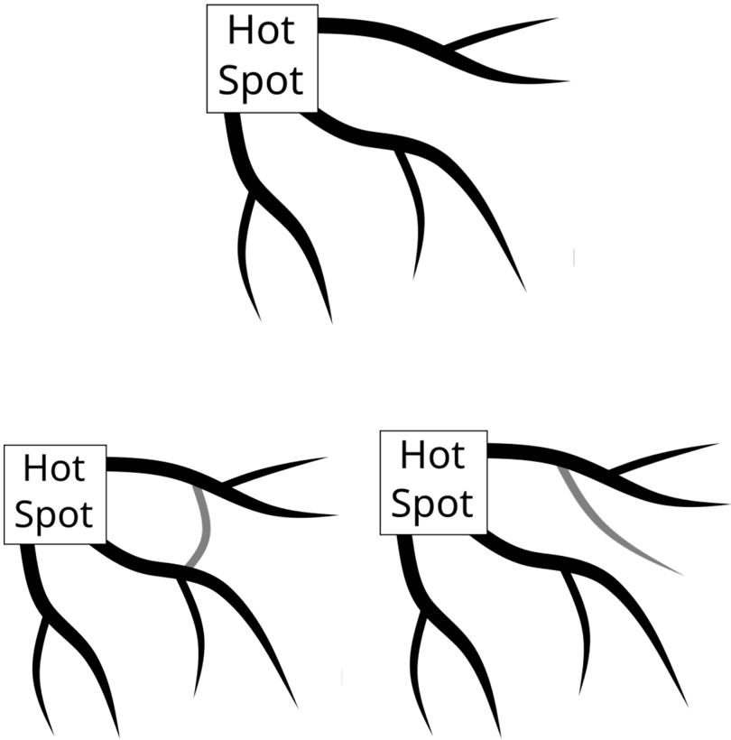
- Whose modification will perform better? Be sure to justify your answer. (4 marks)
Topic: Thermodynamics Metodi: Physical Modeling, Graph Linearization Competenze: Mathematical Modeling, Physical Reasoning Objects: - Fonte: Testo (PDF) - p.13
Sezione C: Satellite (Tempo suggerito: 32 minuti)
Il calore scorre principalmente attraverso la convezione, la conduzione e la radiazione. La convezione è il fattore più dominante per il flusso di calore sulla terra. Nel spazio tuttavia non c’è infame mancanza di aria, questo causa una sfida per la progettazione della sonda spaziale, poiché senza una attenta considerazione della conduzione e della radiazione, la sonda può facilmente sovraccalzare o diventare troppo fredda. Qui esamineremo i flussi di calore conduttivi come quando è necessario un dissipatore di calore per essere termicamente accoppiato a una fonte di calore in una nave spaziale.
Si consideri una piastra rettangolare di metallo di lunghezza , larghezza e spessore . Il calore che scorre attraverso la lunghezza della piastra tramite conduttività è proporzionale alla sua larghezza, spessore e differenza di temperatura lungo la lunghezza della piastra e inverso proporzionale alla lunghezza della piastra.
L’espressione per la quantità di flusso di calore attraverso la piastra è:
Questa costante di proporzionalità, , nota come conducibilità termica, è materiale dipendente. Il calore può essere trasferito più facilmente attraverso la conduzione attraverso materiali ad alta conducibilità termica.
Si consideri una piastra di larghezza , spessore , lunghezza , conducibilità termica , con una differenza di temperatura sul lato sinistro e sul lato destro.
- Con i valori W/(m.K), cm, mm, cm, K, K, calcolare il calore che scorre attraverso la piastra. 1 punto
Ora esploreremo la temperatura della piastra in diversi punti lungo la sua lunghezza. A entrambe le estremità della piastra sono collegate a due serbatoi di calore a e ; si presume che questi siano così grandi da avere una temperatura costante.
Considerare la divisione di questa piastra in due piastre di lunghezza e , con .
Considereremo lo stato di stabilità in cui la temperatura della piastra non cambia e quindi il calore che scorre attraverso entrambe le piastre è lo stesso. Possiamo usare questa costruzione per trovare la temperatura in qualsiasi punto lungo la piastra scegliendo diversi valori di .
-
Qual è la temperatura a due terzi della lunghezza della piastra da sinistra? 1 punto
-
Disegnare un grafico della temperatura della canna in funzione della distanza dal lato sinistro. (3 punti)
Immaginate ora una piastra di rame unita lungo la sua larghezza a una piastra di alluminio come mostrato nel diagramma. La conducibilità termica del rame è circa 2,5 volte quella dell’alluminio, sia la piastra di rame che quella di alluminio hanno la stessa lunghezza .
- La caduta di temperatura è maggiore nell’alluminio o nella piastra di rame? giustifica la tua risposta. 2 punti)
Immaginate che le piastre non fossero unite da un lato all’altro, ma piuttosto piantate una sopra l’altra, come mostrato nel diagramma di seguito.
- Calcolare il calore massimo al secondo che il sistema può condurre se la differenza di temperatura deve rimanere inferiore a 3 K. 2 punti)
Quando si tenta di spostare il calore da una parte di una nave spaziale ad un’altra, è utile progettare un sistema conduttivo che possa trasportare una grande quantità di calore con un piccolo calo di temperatura, pur essendo il più leggero possibile.
Alice e Bob sono due ingegneri che hanno progettato una parte composta che ritengono abbia migliori prestazioni. Entrambi hanno una piastra di alluminio di base, tuttavia Alice ha coperto la metà superiore della piastra con rame mentre Bob ha coperto la metà destra.
Alice sostiene che è meglio avere la metà posteriore coperta di rame in quanto fornisce un percorso di alta conducibilità fino al freddo. Bob sostiene che il suo design è migliore in quanto dà a tutta la hot end un percorso di alta conductività per il più lungo possibile.
- Di chi è la ragione? Usa le equazioni per giustificare la tua risposta. 2 punti)
Una componente del design di Alice e Bob è un punto caldo e devono calmarlo. Dopo aver letto un po’, scoprono che una struttura simile a un albero sarà la più efficace per distribuire il calore dal punto caldo. Tuttavia, ritengono che devono ancora ottenere un po’ di più performance. Come modifica per migliorare la distribuzione del calore Alice pensa che dovrebbero aggiungere un’ulteriore alluminio collegando i rami insieme, tuttavia Bob pensa che sarebbe meglio aggiungere nuovi rami.
- Chi ha modificato il suo sistema? Assicurati di giustificare la tua risposta. (4 punti)
Topic: Thermodynamics Metodi: Physical Modeling, Graph Linearization Competenze: Mathematical Modeling, Physical Reasoning Objects: - Fonte: Testo (PDF) - p.13
Section D: Lasers and Atoms (Suggested time: 15 minutes)
- If a sound source is moving with respect to an observer, a phenomenon known as the Doppler effect will be observed. This effect describes the change in frequency of a wave when there is relative motion between the wave source and the observer. For the case of a moving sound source, this effect can be explained by considering the wavefronts emitted by the source. In the direction the source is moving, the wavefronts will be ‘bunched’ together as shown below, contributing to a smaller wavelength observed. In the opposite direction, the wavefronts are spaced further apart, and a longer wavelength is seen.
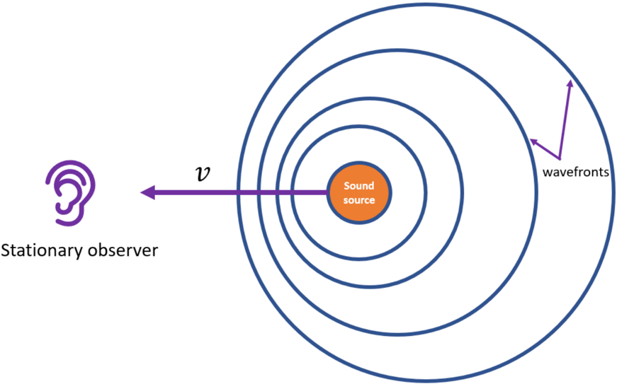
This effect is apparent when a car approaches - as it moves towards you, the pitch you hear increases. As the car moves away, it is lowered in accordance with the Doppler effect. We can describe this frequency shift by:
Where is the speed of sound in the medium (343 m/s in air), is the velocity of the source, is the frequency of the source, and is the frequency heard by an observer.
a) Consider a car horn, which has a frequency of 420 Hz. If a car travelling at 80 km/hour is moving past you, what is the frequency you hear when:
- i) It is moving toward you (1 mark)
- ii) It is moving away from you (1 mark)
- iii) Directly in front of you (1 mark)
Light behaves as a wave, so we might expect the Doppler effect to be relevant here too. Indeed it is! For observers moving at non-relativistic speeds (i.e velocities much smaller than the speed of light) the Doppler shift equation is instead given by:
b) If Earth sends a 2 GHz radio wave signal to a moving satellite, which then reflects the signal back to Earth at a frequency 3.8 kHz higher, how fast is the satellite moving in the direction of radio wave propagation? (3 marks)
- A simple model of an atom consists of electrons orbiting a positively charged nucleus. Quantum mechanics predicts that this arrangement results in shell structure for the orbiting electrons, where these electrons can only occupy discrete energy levels. The spacings and positions of these levels are specific to each element.
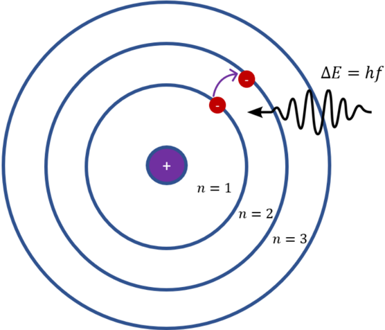
Incoming photons can excite electrons in these shells to higher-lying shells, only if the photon has an energy which exactly matches the energy spacing between the levels (). This is shown above, where denotes the energy level. Because only specific photon energies excite certain transitions, knowledge of transition spectra allow us to uniquely identify elements. The reverse process can also occur: after an electron has been excited, it will decay to the original level and emit a photon with this energy difference. However, the atom stays in the excited state for some period of time before decaying.
a) There is also further energy level structure within each shell. Consequently, there can be transitions associated with this structure. For rubidium-85, transitions within the energy level can be excited with photons of wavelength 780.0 and 794.8 nm. Using this information, calculate the energies of these photons in eV. (3 marks)
Physicists can ‘tune’ (slightly increase or decrease) the wavelength of a laser, so that atoms with certain velocities are more likely to be absorbed. Red detuning refers to making the laser wavelength slightly longer (redder), while blue detuning makes the wavelength shorter (bluer).
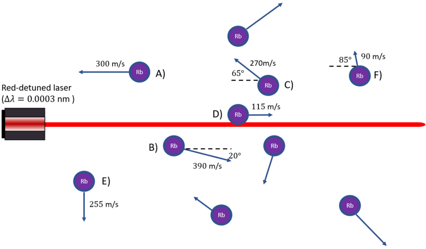
b) If we have a 780.00000 nm laser that is red-detuned such that nm, which atom will have the highest probability of absorbing this light? Explain how you have determined your selection. (4 marks)
Topic: Modern-Quantum Physics, Oscillations & Waves Metodi: Photon Energy Relation, Bohr Model & Quantization, Wave Equation Competenze: Mathematical Modeling, Physical Reasoning Objects: Photon, Electron, Atom, Satellite Fonte: Testo (PDF) - p.17
Sezione D: Laser e Atomi (Tempo suggerito: 15 minuti)
- Se una fonte sonora si muove rispetto all’osservatore, si osserverà un fenomeno noto come effetto Doppler. Questo effetto descrive il cambiamento di frequenza di un’onda quando c’è un movimento relativo tra la fonte d’onda e l’osservatore. Per un’origine sonora in movimento, questo effetto può essere spiegato considerando i fronti d’onda emessi dalla fonte. In direzione in cui si muove la fonte, i fronti d’onda saranno “bunched” insieme come mostrato di seguito, contribuendo a una lunghezza d’onda più piccola osservata. Nella direzione opposta, i fronti d’onda sono spaziati più a distanza, e si vede una lunghezza d’onda più lunga.
Questo effetto è evidente quando una macchina si avvicina - mentre si muove verso di voi, il tono che senti aumenta. Mentre l’auto si allontana, viene abbassata in conformità all’effetto Doppler. Possiamo descrivere questo spostamento di frequenza:
Se è la velocità del suono nel mezzo (343 m/s in aria), è la velocità della fonte, è la frequenza della fonte e è la frequenza udita da un osservatore.
a) Considerate un corno di auto, che ha una frequenza di 420 Hz. Se un’auto che viaggia a 80 km/h si sta muovendo davanti a voi, qual è la frequenza che sentite quando:
- i) Si sta muovendo verso di te (1 punto)
- ii) Si sta allontanando da te (1 punto)
- iii) Direttamente davanti a voi (1 punto)
La luce si comporta come un’onda, quindi ci si potrebbe aspettare che l’effetto Doppler sia rilevante anche qui. In effetti è così! Per gli osservatori che si muovono a velocità non relativistiche (cioè velocità molto più piccole della velocità della luce) l’equazione di spostamento di Doppler viene invece data da:
b) Se la Terra invia un segnale radio di 2 GHz a un satellite in movimento, che poi riflette il segnale di nuovo sulla Terra a una frequenza superiore a 3,8 kHz, a che velocità si muove il satellite nella direzione della propagazione delle onde radio? (3 punti)
- Un modello semplice di un atomo consiste di elettroni che orbitano intorno a un nucleo carico positivo. La meccanica quantistica prevede che questo arredo si traduca in una struttura di conchiglia per gli elettroni in orbita, dove questi elettroni possono occupare solo livelli di energia discreti. Gli spazi e le posizioni di questi livelli sono specifici per ogni elemento.
I fotoni in arrivo possono eccitare gli elettroni in questi gusci verso i gusci più alti, solo se il fotone ha un’energia che corrisponde esattamente allo spazio energetico tra i livelli (). Questo è indicato in precedenza, dove indica il livello di energia. Poiché solo specifiche energie fotoniche eccitano determinate transizioni, la conoscenza degli spettri di transizione ci consente di identificare in modo unico gli elementi. Può verificarsi anche il processo inverso: dopo che un elettrone è stato eccitato, decadrà al livello originale ed emetterà un fotone con questa differenza di energia. Tuttavia, l’atomo rimane in stato eccitato per un certo periodo di tempo prima di decadere.
a) C’è anche un’altra struttura di livello energetico all’interno di ciascuna conchiglia. Di conseguenza, possono verificarsi transizioni associate a questa struttura. Per il rubidio-85, le transizioni entro il livello di energia possono essere eccitate con fotoni di lunghezza d’onda 780,0 e 794,8 nm. Usando queste informazioni, calcolare le energie di questi fotoni in eV. (3 punti)
I fisici possono “adattare” (aumentare o diminuire leggermente) la lunghezza d’onda di un laser, in modo che gli atomi con determinate velocità siano più probabili di essere assorbiti. La detunzione rossa si riferisce a rendere la lunghezza d’onda laser leggermente più lunga (più rossa), mentre la detunzione blu rende la lunghezza d’onda più breve (più blu).
b) Se abbiamo un laser di 780.00000 nm che è rossa-tonnato in modo che nm, quale atomo avrà la più alta probabilità di assorbire questa luce? Spiegate come avete deciso di scegliere. (4 punti)
Topic: Modern-Quantum Physics, Oscillations & Waves Metodi: Photon Energy Relation, Bohr Model & Quantization, Wave Equation Competenze: Mathematical Modeling, Physical Reasoning Objects: Photon, Electron, Atom, Satellite Fonte: Testo (PDF) - p.17
Section E: Unusual Physics (Suggested time: 18 minutes)
Question 1
Dimensional analysis is a process used which allows physicists to determine the form of an equation by considering the units of each term. In every equation in physics the dimensions (units) on the left side of the equation must equal the dimensions on the right side of the equation. Terms which are summed together must also have the same dimensions.
This means that you can use an equation to determine the equivalence of different SI units. For example, knowing the equation , you can determine that the units of force (Newtons) must be equal to the units of mass (kilograms) multiplied by the units of acceleration (meters per second squared). Therefore 1 Newton must be equal to 1 kg m/s/s.
The following sub parts of this question may be attempted in any order.
A very unusually shaped object of surface area (m), moving through a fluid with velocity (m/s), has been predicted to experience a drag force (kg m/s/s) according to the following formula:
Where , , and are unknown constants.
Find the units of the unknown constants , , and in this equation. Express these in terms of the SI base units: kg (kilograms), m (meters), s (seconds). (4 marks)
Question 2
A tall building has not been designed to withstand shaking from an earthquake. When shaken with a regularly repeating force of magnitude (Newtons) and of frequency (Hertz) the top of the building shakes with an amplitude (meters) given by the following equation:
is called the resonant frequency of this building.
Describe what will happen to the amplitude of shaking in the building when:
- a) The frequency gets very close to the resonant frequency (1 mark)
- b) When the frequency is very large (1 mark)
- c) When the frequency is very small (1 mark)
Alice suggests attaching a large pendulum to the top of the building that would hang on the inside of the building and be free to shake. This would change the amplitude of the top of the building to:
- d) Would adding this pendulum reduce the shaking of the large pendulum for any frequencies? If so, for which frequencies would this be most effective. Justify your answer. (1 mark)
Question 3
A synchrotron is a large machine which stores a beam of fast-moving electrons in a circular ring. As the electrons move around the ring they release radiation, which can be used in a number of scientific experiments. These include determining the chemical structure of cocoa butter used to make chocolate.
A segment of a synchrotron called an undulator is used to make the electrons wiggle in their path causing them to release radiation. Bob has a theory that the power of the radiation released by electrons in an undulator depends on five quantities:
- - the charge of the electrons measured in Coulombs (C)
- - the mass of the electrons measured in kilograms (kg)
- - the speed of the electrons measured in meters per second (m/s)
- - a constant given by s C/kg/m
Note is the power measured in Watts (W). Note that a Watt can be expressed as kg m/s. Bob’s theory states that
Determine the values of , , and in this equation. Please show your working, you may upload this as a photo. (4 marks)
Topic: Mathematics Metodi: Dimensional Analysis Competenze: Mathematical Modeling, Unit Conversion, Physical Reasoning Objects: - Fonte: Testo (PDF) - p.20
Sezione E: Fisica insolita (Tempo suggerito: 18 minuti)
La domanda 1
L’analisi dimensionale è un processo utilizzato che consente ai fisici di determinare la forma di un’equazione considerando le unità di ogni termine. In ogni equazione in fisica le dimensioni (unità) sul lato sinistro dell’equazione devono essere uguali alle dimensioni sul lato destro dell’equazione. Le parole sommate devono avere le stesse dimensioni.
Ciò significa che è possibile utilizzare un’equazione per determinare l’equivalenza di diverse unità SI. Ad esempio, conoscendo l’equazione , si può determinare che le unità di forza (Newtons) devono essere uguali alle unità di massa (kilogrammi) moltiplicate per le unità di accelerazione (metri al secondo quadrato). 1 Newton deve pertanto essere uguale a 1 kg m/s/s.
Le seguenti sottotitoli possono essere tentati in qualsiasi ordine.
Un oggetto di superficie (m) di forma molto insolita, che si muove attraverso un fluido con velocità (m/s), è stato previsto che subisca una forza di trazione (kg m/s/s) secondo la seguente formula:
Se , , e sono costanti sconosciute.
Trova le unità delle costanti sconosciute , , e in questa equazione. Esprimere queste in termini di unità di base SI: kg (kilogrammi), m ( metri), s (secondi). (4 punti)
La domanda 2
Un edificio alto non è stato progettato per resistere ai tremori di un terremoto. Quando viene scosso con una forza ripetuta regolarmente di magnitudo (Newtons) e di frequenza (Hertz), la parte superiore dell’edificio scossa con un’ampiezza (metri) data dalla seguente equazione:
La frequenza di risonanza di questo edificio è denominata .
Descrivi cosa accadrà all’ampiezza di tremore nell’edificio quando:
- a) La frequenza si avvicina molto alla frequenza di risonanza (1 punto)
- b) Quando la frequenza è molto elevata (1 punto)
- c) Quando la frequenza è molto bassa (1 punto)
Alice suggerisce di attaccare un grande pendolo alla parte superiore dell’edificio che appenderebbe all’interno dell’edificio e sarebbe libero di scuotere. Questo cambierebbe l’ampiezza della parte superiore dell’edificio in:
- d) L’aggiunta di questo pendolo ridurrebbe il tremamento del grande pendolo per qualsiasi frequenza? In tal caso, per quali frequenze sarebbe più efficace. giustifica la tua risposta. 1 punto
La domanda 3
Un sincrotron è una grande macchina che immagazzina un fascio di elettroni in movimento veloce in un anello circolare. Mentre gli elettroni si muovono intorno all’anello rilasciano radiazioni, che possono essere utilizzate in una serie di esperimenti scientifici. Tra questi, si tratta di determinare la struttura chimica del burro di cacao utilizzato per la produzione di cioccolato.
Un segmento di un sincrotrone chiamato ondulatore viene utilizzato per far muovere gli elettroni nel loro percorso causando loro di rilasciare radiazioni. Bob ha una teoria secondo cui la potenza della radiazione rilasciata dagli elettroni in un ondulatore dipende da cinque quantità:
- - carica degli elettroni misurata in Coulombs (C)
- - massa degli elettroni misurata in kg
- - velocità degli elettroni misurata in metri al secondo (m/s)
- - costante data da s C/kg/m
Nota è la potenza misurata in Watts (W). Si noti che un Watt può essere espresso in kg m/s. La teoria di Bob afferma che
Determinare i valori di , , e in questa equazione. Per favore, mostrate il vostro lavoro, potete caricare questa come foto. (4 punti)
Topic: Mathematics Metodi: Dimensional Analysis Competenze: Mathematical Modeling, Unit Conversion, Physical Reasoning Objects: - Fonte: Testo (PDF) - p.20